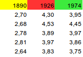

[ Prev ]
[ Index ]
[ Next ]
Applied Hydrography
Created Pondělí 24 říjen 2011
Project
1974 now rive - blue field
1890 -- -- -- --
1926 ------
- 28.11. Prezentation !!
- measure width 0,5 km
- radius of curvature Rc

- inflaction point
- meandering index:
Ethemeral streams
Paolo Billi (Italy)
- 25% of population live in areas of ethemeral streams
- usually poor country - carelessness, miscouceptions, limited informations
- people not care about e.s.
- dangerous in flood seasons
- difficult to predct (resources only in rich coutries)
- fakt rapid, localized, after raining day short intense fast flood → dry after few hour of flood
- this water has a lot of energie
- sediment is transported with water
- ethemeral streams are important ecosystems, sensitive to climate
- ocaasionally 5-7 days/year, 1x 5 year
- a lot of water infiltraite → good because of pozdemní water - people can dig and fiding a water
- ex. at upstream river 80m wide riwer, 1,5 km downstrem 20 m wide because of infitration
- river move, not every time are on same place
- no data, only from local people, who saw high of large of flood
- lidi jsou neponaučitelní - je to jen čás od času, zapoemnou na flood -> market stojí tam, kde byla před 3-mi lety povodeň
- don't have warnings systems
- conclucion: data bases missing, more science to predicted (planning), climat (temperature) increading . predicted
Backlinks: